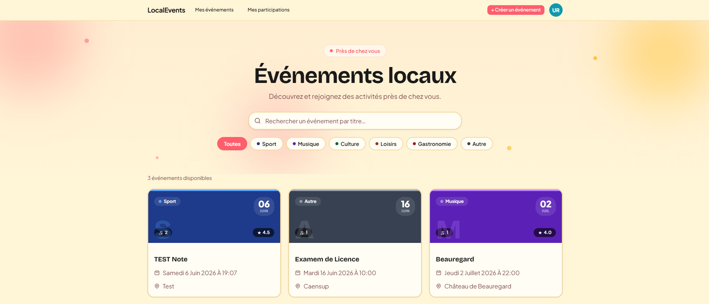
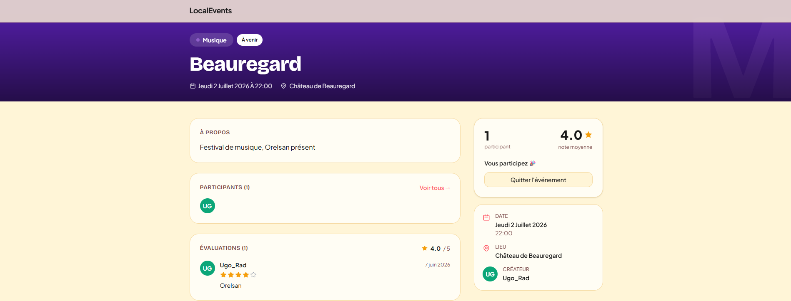
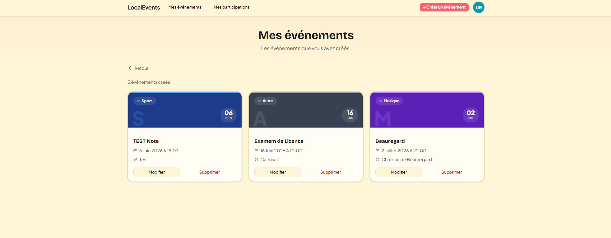
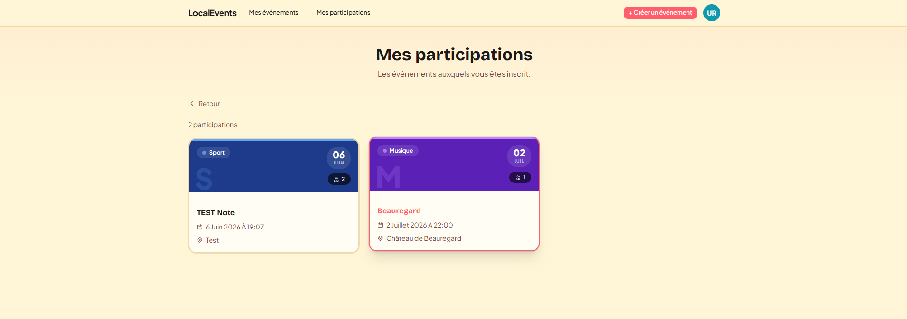
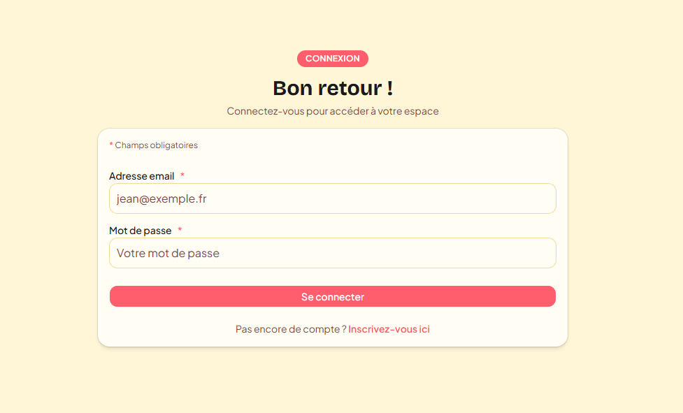
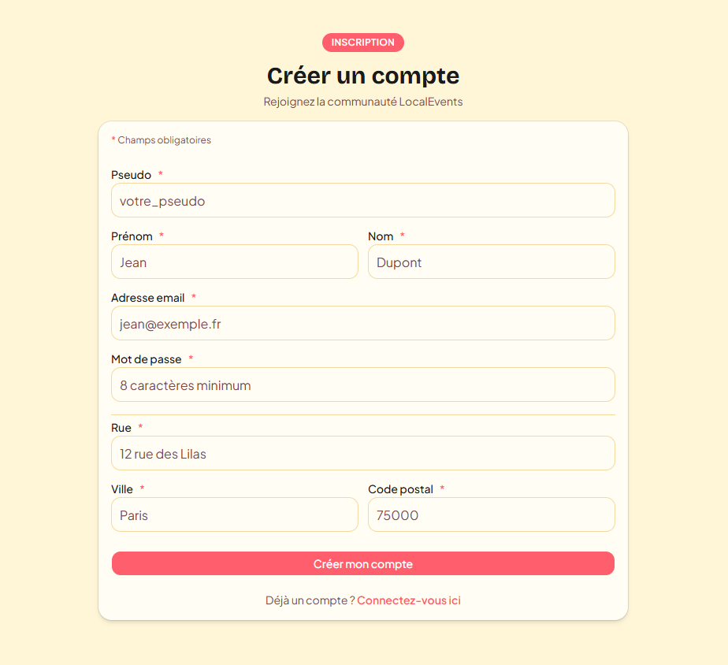

Projet. LocalEvents
LocalEvents est une plateforme web fullstack permettant de découvrir, créer et rejoindre des événements près de chez soi. Les utilisateurs peuvent s'inscrire, publier leurs propres événements, participer à ceux des autres, consulter la liste des participants et laisser une évaluation notée. Le projet a été conçu en suivant une analyse fonctionnelle complète (user stories, endpoints REST et diagrammes UML en PlantUML) avant le développement.
Le projet
Application de gestion d'événements locaux développée dans le cadre de ma Licence au CNAM : authentification, CRUD d'événements, participations et système de notation.
Stack technique
Front-end :
- ▹ Next.js 16 (App Router)
- ▹ React 19 · TypeScript
- ▹ Tailwind CSS 4 · shadcn/ui
Back-end :
- ▹ Fastify 5 · TypeScript
- ▹ Prisma 7 · PostgreSQL
- ▹ JWT & cookies · bcrypt · Zod
Travail en mode projet
Projet réalisé en équipe avec :
- ▹ Ugo Radiguet
- ▹ Kevin Camus
- ▹ Mathieu Mouchard
Analyse fonctionnelle, user stories et diagrammes UML (PlantUML) puis développement et versionnage Git.
Fonctionnalités principales
Architecture
L'API REST suit une architecture en couches claire : routes → contrôleurs → services → Prisma, avec validation des entrées via Zod et gestion centralisée des erreurs. Le modèle de données repose sur les entités User, Event, Participation et Evaluation, avec contraintes d'unicité (un utilisateur ne peut rejoindre ou évaluer un même événement qu'une seule fois).
Aperçu de l'application





